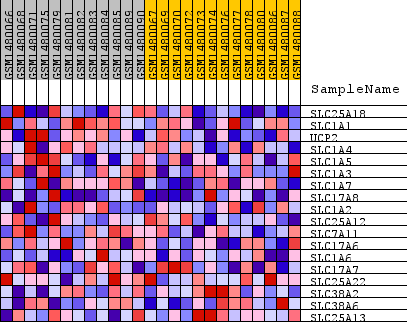
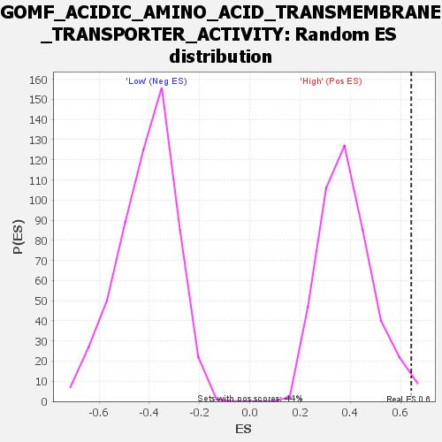

Profile of the Running ES Score & Positions of GeneSet Members on the Rank Ordered List
| Dataset | WG6v3.CPT1A.cls#High_versus_Low.CPT1A.cls#High_versus_Low_repos |
| Phenotype | CPT1A.cls#High_versus_Low_repos |
| Upregulated in class | High |
| GeneSet | GOMF_ACIDIC_AMINO_ACID_TRANSMEMBRANE_TRANSPORTER_ACTIVITY |
| Enrichment Score (ES) | 0.64151454 |
| Normalized Enrichment Score (NES) | 1.6633852 |
| Nominal p-value | 0.020547945 |
| FDR q-value | 1.0 |
| FWER p-Value | 1.0 |
| SYMBOL | TITLE | RANK IN GENE LIST | RANK METRIC SCORE | RUNNING ES | CORE ENRICHMENT | |
|---|---|---|---|---|---|---|
| 1 | SLC25A18 | SLC25A18 | 21 | 0.246 | 0.2579 | Yes |
| 2 | SLC1A1 | SLC1A1 | 217 | 0.133 | 0.3878 | Yes |
| 3 | UCP2 | UCP2 | 244 | 0.127 | 0.5204 | Yes |
| 4 | SLC1A4 | SLC1A4 | 839 | 0.079 | 0.5726 | Yes |
| 5 | SLC1A5 | SLC1A5 | 1984 | 0.050 | 0.5660 | Yes |
| 6 | SLC1A3 | SLC1A3 | 2272 | 0.045 | 0.5991 | Yes |
| 7 | SLC1A7 | SLC1A7 | 2355 | 0.044 | 0.6415 | Yes |
| 8 | SLC17A8 | SLC17A8 | 3193 | 0.034 | 0.6342 | No |
| 9 | SLC1A2 | SLC1A2 | 4275 | 0.024 | 0.6042 | No |
| 10 | SLC25A12 | SLC25A12 | 4391 | 0.023 | 0.6230 | No |
| 11 | SLC7A11 | SLC7A11 | 5425 | 0.017 | 0.5875 | No |
| 12 | SLC17A6 | SLC17A6 | 6749 | 0.011 | 0.5305 | No |
| 13 | SLC1A6 | SLC1A6 | 8406 | 0.005 | 0.4502 | No |
| 14 | SLC17A7 | SLC17A7 | 10539 | -0.002 | 0.3420 | No |
| 15 | SLC25A22 | SLC25A22 | 10590 | -0.002 | 0.3413 | No |
| 16 | SLC38A2 | SLC38A2 | 14746 | -0.020 | 0.1484 | No |
| 17 | SLC38A6 | SLC38A6 | 15849 | -0.030 | 0.1231 | No |
| 18 | SLC25A13 | SLC25A13 | 17594 | -0.058 | 0.0942 | No |

